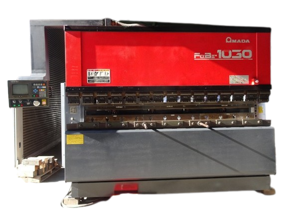

基本情報 在庫コード MA221203-01 商品コード 102 カテゴリー 板金機械 ＞ プレスブレーキ、ベンダー ＞ 油圧プレスブレーキ（3,000mm〜） 機械名 100トンベンダー メーカー アマダ 型式 FBD1030 詳細情報 年式 1998年式 在庫場所 （都道府県） 群馬県 在庫場所詳細（住所） 群馬県伊勢崎市三室町5786－1 URLリンク https://www.ssk-net.jp 仕様詳細 能力 100ton テーブル長さ 3000mm ストローク長さ 100mm ギャップ深さ 400mm オープンハイト 370mm NC9-EV
